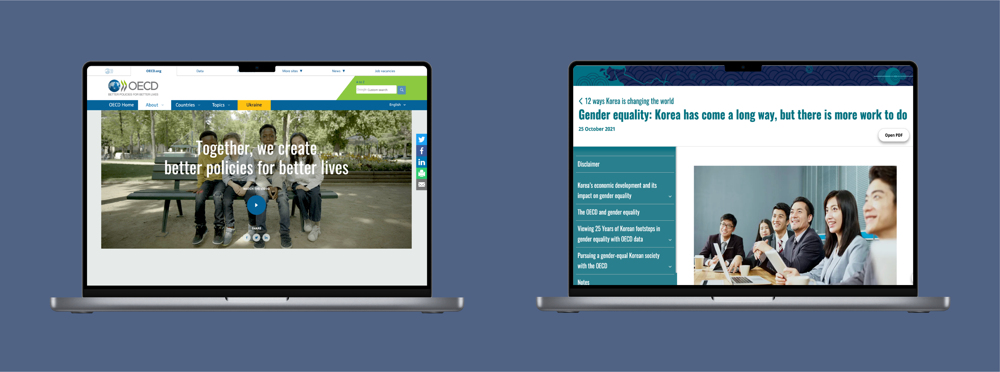
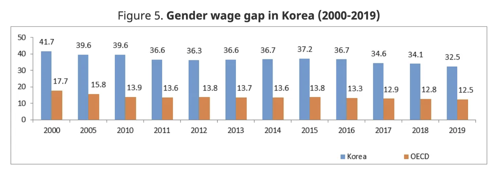
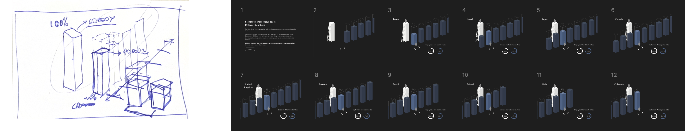

UNIVERSITY PROJECT | DELIVERABLES: DATA DOCUMENTATION | TIMEFRAME: 15 DAYS
The task is to conduct research on reputable data sources that cover relevant topics. The objective is to utilize reliable data sets to present information in an engaging, accurate, precise, and unbiased manner. Additionally, the focus is on exploring the effectiveness of data storytelling as a tool for educating a specific user demographic.
Test Project PrototypeOrganization for Economic Co-operation and Development (OECD)
The Organization for Economic Co-operation and Development, or OECD conducts research, analyzes economic data, and provides a platform for member countries to discuss and coordinate policies on a range of issues, including education, trade, and environmental sustainability.
The organization aims to foster economic growth, improve living standards, and contribute to global development through international cooperation. Dialogue, consensus, and peer review are fundamental elements of the OECD's work. The OECD is one of the world's largest and most reliable sources of comparable statistical, economic and social data. They provide a unique forum and knowledge hub for data and analysis.
Our World in Data
Our World in Data provides interactive charts and visualizations on global topics such as health, education, and inequality. The platform simplifies complex data, making it easy to explore and understand trends. It aims to help users make sense of global issues through clear and accessible graphics.
The first source I conducted my research on was with the OECD. This data sheet thoroughly investigates the disparity in wages between men and women across various countries. An in-depth analysis reveals that the average wage gap within the member countries of the OECD stands at 11.4%. Among all the countries studied, South Korea has the most substantial gender wage gap of 31.2%.

I compared the previous graph to this one found on OurWorldInData. I discovered that in most countries the economic inequality has decreased over the years but Korea still continues to have one of the highest wage gaps between men and women.

These data sets explore the Labour Force Statistics in various countries annually between the ages of 15-64. In 2022, men have an employment population ratio of 76.9, while women have a ratio of 60. Men have an unemployment rate of 2.7 whereas women have a rate of 3. The rates have gotten more similar since 2010.

While further researching Korea’s gender inequality, I found that Korea has made great progress, particularly in the field of education. The percentage of Korean women enrolled in higher education has dramatically increased, surpassing the men. But the tremendous progress made in the field of education has not yet had a significant impact on the disparity in wealth. Korea has the largest wage disparity among OECD members, with women in Korea earning a third less on average than men, despite improvements over the previous few decades.
While the first prototype marked a significant step forward in accurately portraying the data, I noticed a few issues. Despite its improvements in representation, it lacked the interactive elements necessary to fully engage the audience. Additionally, while it effectively showcased the wage gap within Korea, its comparative analysis with other countries did not adequately convey the magnitude of the disparity.

After feedback and discussions, several ideas came up that made the prototype more interactive and provided more information. The prototype followed the same design choice, but rather than show all the bars one at a time, multiple would be displayed, so the user can see the significant differences in wage gaps. As well, a salary difference would be shown to provide that extra insight to users. And finally, users would also get to see the employment rate of the general population of that country by gender.
Conducting user testing was crucial to ensure the design met user needs and worked well. It helped find usability issues and gather feedback for improvements. By watching how users interacted with the design, we confirmed that the data visualizations were clear and the interactive features were engaging. 2 users participated in this test. For this test, I prepared 3 tasks for users to complete. These tasks include:
Locate the difference in salaries in Korea
Locate the difference in wage gaps between Canada and Korea
Locate the difference in employment participation rate between women in Korea and women in Japan

I added a brief description to the Korea page to clearly show that it is the main focus. Even though the visualization can compare different countries, I emphasized Korea to fit the needs of my user persona and scenario. I made only a few changes due to mixed feedback, keeping the main features of the prototype.